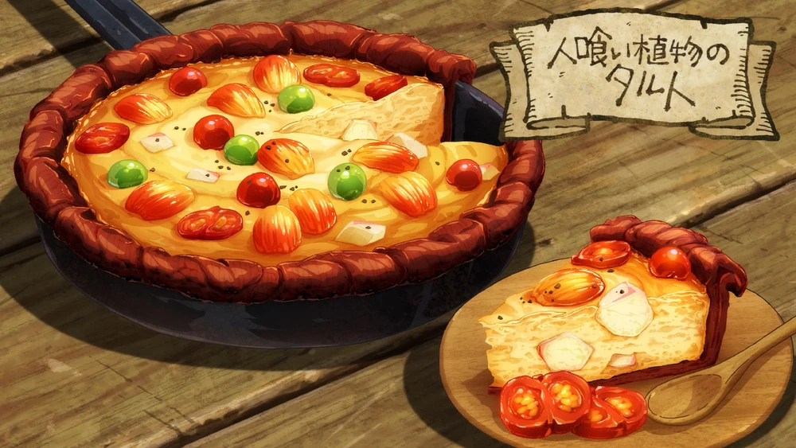

Man-Eating Plant Tart

Description
A tart-like dish created by Senshi from the fruit of different Man-eating
Plants. Described as salty by the group, it is likely to be more akin to a
quiche but with an inedible shell. A mixture of mashed up and cut up
Man-eating Plant fruit, slime, and scorpion soup is poured into a pan
lined with the flattened peel of the fruit and cooked before garnishing
with some more fruit.
Ingredients
-
200ml Leftover
scorpion soup
- 80g Slime gelatin
- 3 med. size Baraselia
- 5 or 6 med. size Mearauk
- 3 med. size Betahn
- Salt, to taste
- Pepper, a dash
Method
-
Steam the fruit lightly. Cut around the stem in a circle, twist the stem
and pull away to remove the seeds. Peel the skin off, beat to make it
soft, and cover the frying pan with it.
-
Grind up the unripe fruit, adding Slime and some scorpion broth, mixing
until it thickens. Once it gets smooth, add the rest of the scorpion
broth and chunks of tree fruit and mix.
- Pour the mixture into the frying pan and cook.
- Once it starts bubbling, add the rest of the fruit on top.
Home